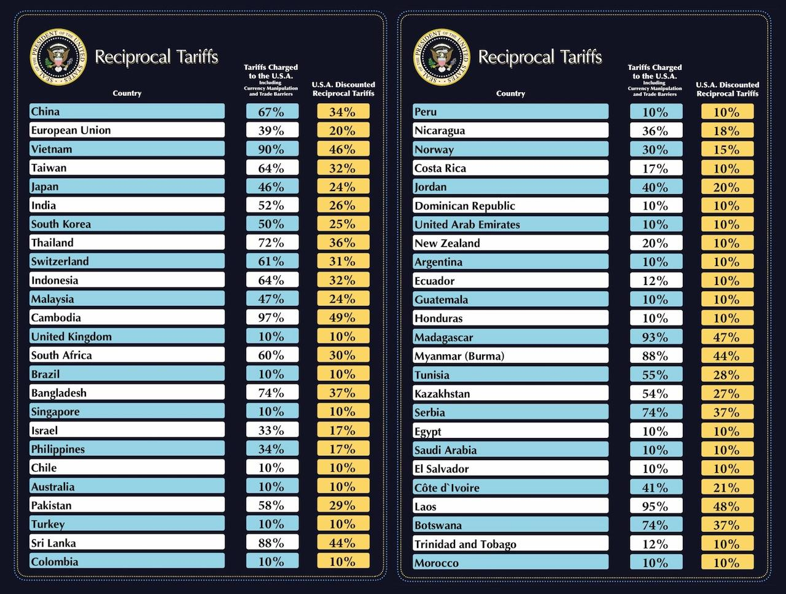

트럼프 무역전쟁: 드디어 미국 해방의 날, 아니 전쟁 선포
이런저런 일이 있어왔지만 결국 트럼프는 기본관세와 상호관세 행정명령에 서명했다. 결론부터 말하자면 한국은 25%의 상호관세가 부과된다. 그밖에 중국 34%, 일본 24%, 유럽 20%, 그 외에는 10%의 기본관세가 부과된다.
 관세 부과 목록 (@WhiteHouse, X)
10%의 기본관세는 미국 시각 4월 5일 바로 발효되며 상호관세는 4월 9일 발효된다. 다른 말로 하자면 상호관세 협상은 일단 4월 9일까지 열려 있다는 말이다.
그 간에 있었던 일들을 간단하게 정리해 보자
트럼프는 상호관세에 예외가 없으면서도 관대할 것이라는 이중적인 태도를 계속 보여왔다. 물론 공격적인 발언은 이어졌는데 자동차 관세 부과 예고를 지속적으로 강조했다. 그리고 의약품이나 목재 등에도 부과할 것이라는 운도 계속 띄웠다. 다만 그 사이 터진 정치 스캔들 무마를 위해 일부러 세게 말하는 거 아니냐는 추측도 돌기도 했다.
한국 입장에서 자동차 관세는 너무 큰 위협이다. 현대차그룹이 투자 이야기를 하기는 했지만 그건 미국 내에서 생산되니 당연히 관세가 사라진다는 선에서 끝일 뿐이다. 여기서 끝이면 다행일 지도 모르겠지만, 트럼프는 한국을 계속 지적하고 협박하고 있다. USTR을 통해 알려진 바에 따르면 직접적인 관세 말고도 규제 부문에서 상당히 많은 건에 트집을 잡고 있는데 예를 들어 망사용료 규제 등이 있다. 헉 이건 환영 힘내라 트럼프 망사용료 폐지시키자.
EU는 자동차 관세에 대해 반발할 조짐을 보였다. 이탈리아의 페라리는 미국 판가 10% 인상 예고를 하기도 했다.
캐나다는 그 사이에도 계속 반발 조짐을 보여왔다. 협상도 서두르지 않는다고 하고 보복관세도 준비되어 있다고 한다. 정치권 뿐만 아니라 여론도 이에 동조하며 미국에 대해 상당히 거칠어지는 감정이 만들어지고 있는 것 같다. 어쨌거나 협상이 없는 건 아닌 것 같고 캐나다 총선 이후 캐나다 총리와 트럼프의 만남이 성사될 가능성은 있을 것 같다.
EU와 캐나다는 관세에 대해 연합할 움직임을 보이기도 했다. 트럼프는 이를 경계하는 모양이며 더더욱 협박에 열을 올리기도 했다.
중국에 대해서는 틱톡 매각 카드를 협상 테이틀에 올린 모양이다. 어쨌든 중국이 순순히 받아들일 리는 없다. 당연히 중국의 입은 더 험해질 것이다.
러시아에 대해서는 휴전에 러시아 원유 관세 카드를 올리는 기행을 벌이기도 했다. 역시 우크라이나-러시아 휴전이나 종전이 마음대로 안 되는 모양인데 여기에 관세를 끌여들일 줄은 상상도 못 했었다.
어쨌든 트럼프는 저질렀다
이런저런 루머도 추측도 많았지만 결국 트럼프는 한국시각 4월 3일 오전 5시에 상호관세 행정명령에 서명했다.
사실상 보복관세에 가까운 상호관세는 한국 25%, 일본 24%, 중국 34%, 유럽 20% 등등이 부과되었다. 기타 대상국들은 최소 10%는 부과되었다. 상호관세가 부과된 60개국에는 4월 9일부터 효력이 발생된다. 그밖에 10% 기본 관세는 4월 5일부터 발효된다. 아마도 이 둘이 합쳐지는 건 아닌 것 같고 모든 국가에 10%는 기본 부과되고 9일에 최종 관세로 올라가는 형태라고 추측된다.
전반적으로 세게 때린 것은 사실인 것 같다. 특히 중국은 기존 20%에 34% 추가라 결국 54%로 꽤나 센 편이다. 여기에 베트남은 46%, 인도 26%, 인도네시아 32%도 상당한 편이다. 캐나다와 멕시코는 표에는 표시되지 않았는데 이미 25% 부과 및 유예된 상태라 그런 듯하다. 다만 USMCA 준수 상품은 관세가 면제된다고 하니 좀 더 지켜볼 여지는 있을 것 같다.
베트남 관세는 한국의 타격도 클 것 같지만 미국 내 다수의 기업에도 영향이 클 것 같다. 애플은 중국, 인도, 인도네시아 관세로 꽤나 다양하게 처맞게 생겼다.
지금껏 그래왔지만, 발표 도중 비판한 국가에 한국도 또 포함되어 있었다. 그래서인가 일본 보다도 1% 높은 관세를 맞아버렸다. 기분은 나쁘지만 망사용료를 협상대상으로 삼아준 것에 한해서는 이상하게도 고마움을 느꼈다.
재무장관은 이번 관세가 최대 관세율일 것이라 발언했다. 즉 협상으로 줄여나갈 여지가 있다는 말이다. 아마도 최대한 낮추면 10%가 되는 그런 형태 같다. 다만 한국 입장에선 일단 시간이 더 걸릴 것은 분명해 보여서 힘이 많이 들 것 같다.
철강, 알루미늄, 자동차는 이미 관세가 부과되는 만큼 이번 상호관세에 적용되지 않는다고 한다. 그리고 곧 관세가 부과될 가능성이 높은 구리, 의약품, 반도체, 목재 등도 일단은 면제다. 금과 에너지는 미국에서 필요로 하는 만큼 면제하는 것 같다.
한국 조선업은 어떻게 되는지 명확하진 않지만 예외대상에 없는 만큼 상호관세 대상이 될 것 같다. 물론 조선은 미국에서 바라는 것이기도 하기에 협상에서 바뀔 여지는 크다고 보인다.
어쨌거나 미국은 보복하지 말라고 경고했다. 당연하게도 보보복관세에는 보보보복관세를 때릴 것이라는 말일 것이다. 근데 솔직히 듣는 입장에선 참 기분 나쁘긴 하다.
우선은 4월 9일 까지 지켜보는 것은 필요할 것 같다. 협상이 어떻게 진행되나, 혹은 보복관세에 대한 보복관세가 어떻게 나오냐는 것은 아직 결정되지 않았으니 말이다. 특히 과연 중국 그리고 'EU 캐나다 연합'은 어떻게 나올 것인가도 중요한 포인트다. 멕시코와 호주는 어쨌든 보복은 하지 않겠다고 했으니 논외로 치더라도 말이다.
그나저나 글 올리는 타이밍을 못 맞췄다
원래 어제 글을 쓰려고 했는데 갑자기 Emacs에서 끌어다 놓기(drag and drop) 코드가 동작하지 않기 시작해서 한참을 삽질하다 결국 Emacs 자체적인 기능으로 대응하기로 하고 글을 마저 작성하다보니 늦어졌다.
어쨌든 여담으로 글을 마무리 하자.
혹자는 트럼프의 관세는 여전히 협상 도구일 뿐이라고는 하지만, 금리나 달러 가치가 함께 떨어지는 것을 보면 이것을 노린 것도 아닐까 하는 의심은 충분히 할 수 있을 지도 모르겠다.
한국은 다행히도 탄핵 국면이 빠르게 마무리 되며 상황에 따라 환율 안정화 가능성도 생각할 수 있을 것 같다. 하지만 대선은 아무래도 6월은 되어야 결론이 나올 것 같으니 당분간은 답답한 상황이 이어질 것 같다.
뭐 그냥 트럼프가 빨리 립서비스라도 해주길 바랄 뿐인 것 같다.